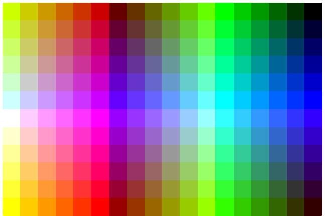

Formateando el texto en HTML
En esta sección repasaremos y profundizaremos en algunos conceptos introducidos en la unidad anterior sin dejar de aclarar cómo manejaremos los estilos en nuestra web.
A continuación, trabajaremos en colocar negritas, itálicas, subrayados, subíndices y superíndices.
Además de todo lo relativo a la organización de los párrafos, uno de los aspectos primordiales del formateo de un texto es el de la propia letra. Resulta muy común y práctico presentar texto resaltado en negrita, itálica y otros. Paralelamente el uso de índices, subíndices resulta vital para la publicación de textos científicos. Todo esto y mucho más es posible por medio del HTML a partir de multitud de etiquetas entre las cuales vamos a destacar algunas.
Pero antes de comenzar cabe hacer una reflexión sobre por qué son interesantes estas etiquetas y se siguen usando, a pesar que están entrando prácticamente en el terreno de CSS, ya que en la práctica están directamente formateando el aspecto de las fuentes. Son importantes porque las etiquetas en si no están para definir un estilo en concreto, sino una función de ciertas palabras dentro de un contenido. Por ejemplo, las negritas quieren decir que algo tiene más fuerza o importancia dentro de un texto y una itálica se puede usar para un texto que citado o algún énfasis particular. En cuanto a subíndices y superíndices todavía es más claro, ya que éstos especifican cosas que tiene que ver con el contenido y no con la presentación.
Negrita
Podemos escribir texto en negrita incluyéndose dentro de las etiquetas B y su cierre (bold). Esta misma tarea es desempeñada por STRONG y su cierre, siendo ambas equivalentes. Nosotros nos inclinamos por la primera por simple razón de esfuerzo.
Escribiendo un código de este tipo:
<b>Texto en
negrita</b>
Obtenemos este resultado:
Texto en negrita
Nota: ¿Qué diferencia hay entre B y STRONG? Aunque las dos etiquetas hacen el mismo efecto, tienen una peculiaridad que las hace distintas. La etiqueta B indica negrita, mientras que la etiqueta STRONG indica que se debe escribir con fuerza.
HTML lo interpretan los navegadores según su criterio, es por eso que las páginas se pueden ver de distinta manera en unos navegadores y en otros. La etiqueta H1 quiere decir "encabezado de nivel 1", es el navegador el responsable de formatear el texto de manera que parezca un encabezado de primer nivel. En la práctica los encabezados de los navegadores habituales son muy parecidos (tamaño de letra grande y en negrita), pero otro navegador podría colocar los encabezados con subrayado si le pareciese oportuno.
La diferencia entre b y STRONG se podrá entender ahora. Mientras que B significa simplemente negrita y todos los navegadores la interpretarán como negrita, STRONG es una etiqueta que significa que se tiene que resaltar fuertemente el texto y cada navegador es el responsable de resaltarlo como desee. En la práctica STRONG coloca el texto en negrita, pero podría ser que un navegador decidiese resaltar colocando negrilla, subrayado y color rojo en el texto.
Itálica
También en este caso existen dos posibilidades, una corta: I y su cierre (italic) y otra un poco más larga: EM y su cierre. En la mayoría de las páginas que podrás ver por ahí, te encontrarás con la primera forma sin duda más sencilla para escribir y acordarse.
He aquí un ejemplo de texto en itálica:
<i>Texto en
itálica</i>
Que da el siguiente efecto:
Texto en itálica
Subrayado
El HTML nos propone también para el subrayado el par de etiquetas: U (underlined). Sin embargo, el uso de subrayados ha de ser aplicado con mucha precaución dado que los enlaces hipertexto van, a no ser que se indique lo contrario, subrayados con lo que podemos confundir al lector y apartarlo del verdadero interés de nuestro texto.
Además, cabe decir que la etiqueta U se ha quedado obsoleta, debido a que es algo que realmente se debe hacer del lado del CSS, al ser básicamente un estilo.
Subíndices y superíndices
Este tipo de formato resulta de extremada utilidad para textos científicos. Las etiquetas empleadas son:
<sup> y
</sup> para los superíndices
<sub> y
</sub> para los subíndices
Anidar etiquetas
Todas estas etiquetas y por supuesto el resto de las vistas y que veremos más adelante pueden ser anidadas unas dentro de otras de manera a conseguir resultados diferentes. Así podemos, sin ningún problema, crear texto en negrita e itálica embebiendo una etiqueta dentro de la otra:
<b>Esto sólo está en negrita
<i>y esto en negrita e
itálica</i></b>
Esto nos arroja un texto como este:
Esto sólo está en negrita y esto en negrita e itálica
Consejo: cuando anides etiquetas HTML hazlo correctamente. Nos referimos a que si abres etiquetas dentro de otra más principal, antes de cerrar la etiqueta principal cierres las etiquetas que hayas abierto dentro de ella.
Debemos evitar códigos como el siguiente:
<b>Esto sólo está en negrita e
<i>itálica</b></i>
En favor de códigos con etiquetas correctamente anidadas:
<b>Esto sólo está en negrita e
<i>itálica</i></b>
Esto es muy aconsejable, ya que aunque los navegadores entiendan bien las etiquetas mal anidadas, por dos razones:
Sistemas como XML no son tan permisivos con estos errores y puede que en el futuro nuestras páginas no funcionen correctamente.
A algunos navegadores les cuesta tiempo de procesamiento resolver este tipo de errores, incluso más que mostrar una página, por ende, debemos evitar que una mala codificación interfiera en la fluidez de transmisión de datos del servidor a nuestro dispositivo.
Los colores y HTML
Ahora aprenderás a crear colores en notación RGB con valores en hexadecimal, la manera más habitual de expresar un color en HTML. Explicamos la correcta utilización de los colores en el HTML.
En la composición de webs juegan un papel muy importante los colores. Usar una paleta de colores definida suele ayudar a la consistencia de un diseño y a transmitir ciertas sensaciones al usuario. Como parte de nuestro aprendizaje de HTML tenemos que detenernos a comprender cómo se expresan los colores en el lenguaje.
En HTML se usa una notación específica de especificar un color, compuesta por tres valores "RGB": Red, Green, Blue. Rojo, Verde y Azul. Es decir, que para conseguir un color cualquiera mezclaremos cantidades de cada uno de esos colores. RGB es el modelo usado para la creación de colores de los monitores y televisores, así que es un excelente modo de expresar color en un medio digital como una web.
Los valores RGB en HTML se indican en numeración hexadecimal, en base 16. Los dígitos pueden crecer hasta 16. Como no hay tantos dígitos numéricos, se utilizan las letras de la A a la F.
Para conseguir un color, mezclaremos valores asignando dos dígitos a cada valor RGB. De esta manera: "#RRGGBB"
Como has observado, colocamos también una almohadilla "#" al principio, para indicar que esa cadena es un valor de color en hexadecimal.
Más adelante en el artículo veremos ejemplos en una paleta, con valores en RGB. No obstante ejemplos podrían ser #000000 para el negro, #FFFFFF para el blanco, #660000 sería un rojo oscuro o #FF0000 un rojo brillante.
Actualmente hay otras formas de escribir colores en las que profundizaremos en CSS. Muchas veces se utilizan diferentes estilos de escritura para definir colores, porque alguna notación es más versátil y podemos conseguir más fácilmente cualquier tonalidad deseada o el manejo de la opacidad (transparencia) en un sólo código.
Atributos de color en etiquetas HTML
En HTML existen numerosas etiquetas que soportan atributos de color. Para que tengas una primera referencia, así se cambiaría la fuente para escribir en rojo:
<font color= "#FF0000">Rojo<font>
Como ves, al Atributo color le damos un valor RGB en formato hexadecimal. El caracter # se coloca al principio de la cadena.
Nota: de nuevo tenemos que advertir sobre la necesidad de expresar todo lo que son estilos mediante CSS. En HTML nos debemos centrar en lo que es escribir el contenido y en CSS en aplicar el estilo. Es de destacar, que el color es más estilo que contenido, así que debería ir en el CSS.
El motivo por el cual toda la etiqueta <font> ha
quedado en desuso, es justamente porque solo
se utiliza para aplicar un estilo.
En CSS los colores se pueden expresar de la misma manera que en HTML y también abordaremos otras opciones de codificación que mencioné en esta sección.
Combinar otros colores
Al principio puede parecer difícil crear combinaciones de color con valores hexadecimales, pero con la práctica nos iremos acostumbrando y hasta seremos capaces de pensar un color y conseguir de cabeza un valor RGB aproximado. Nos vendrá bien tener en mente la rueda de colores.
Algunos editores como el Geany propuesto, o Visual Studio Code, vienen con “color pickers” integrados para facilitar esta tarea, sin tener que cambiar de programa. La mayoría de los editores puede instalar de manera adicional plugins (complementos) para implementar selectores de color, ya que es una demanda muy habitual de los desarrolladores.
Para obtener una rueda y los códigos de colores te recomendamos que ingreses en el sitio: https://htmlcolorcodes.com/es/ donde, en forma totalmente gratuita y sin registración previa, podrás consultar códigos, tablas y nombres de colores.
Colores seguros
En lo que respecta a los colores, no podemos saber que tipo de pantalla va a tener la persona que nos visita y la resolución de color. Por eso una buena idea es usar aquellos colores considerados seguros, que son los "Safe colors", y corresponden a colores compatibles con todos los sistemas.
Nota: hoy la necesidad de usar colores seguros (aquellos que se verán bien en todos los monitores, independientemente de su paleta de color), no es tan grande como hace años, porque la tecnología ha evolucionado mucho y es raro encontrar un monitor que solo soporte 256 colores. No obstante es un conocimiento que resulta interesante por el hecho de remarcar la naturaleza universal de la web y la necesidad de construir páginas que sean capaces de adaptarse a cada medio donde va a ser consultada. En este curso no vamos a entrar en detalles que tienen que ver con el diseño gráfico, pero si es de tu interés te recomiendo leer sobre el Responsive Web Design y el uso de colores. Igualmente, en nuestro proyecto de página web, abordaremos casos Responsive en webs para pc y celulares.
La forma de conseguir colores seguros es limitando nuestros colores a los que se pueden conseguir utilizando los siguientes valores:
00
33
66
99
AA
CC
FF
Es interesante comentar que, cuando usamos colores seguros, podemos resumir la notación RGB usando tres caracteres en vez de 6. Por ejemplo, #000 equivale a #000000. O #ABC equivale a #AABBCC.
Usando todas las combinaciones de “safe colors”, conseguimos una paleta de colores variados. La siguiente paleta muestra un cuadro reducido de los safe colors más utilizados:
Fuente: Curso Fullstack Phyton del programa Codo a Codo